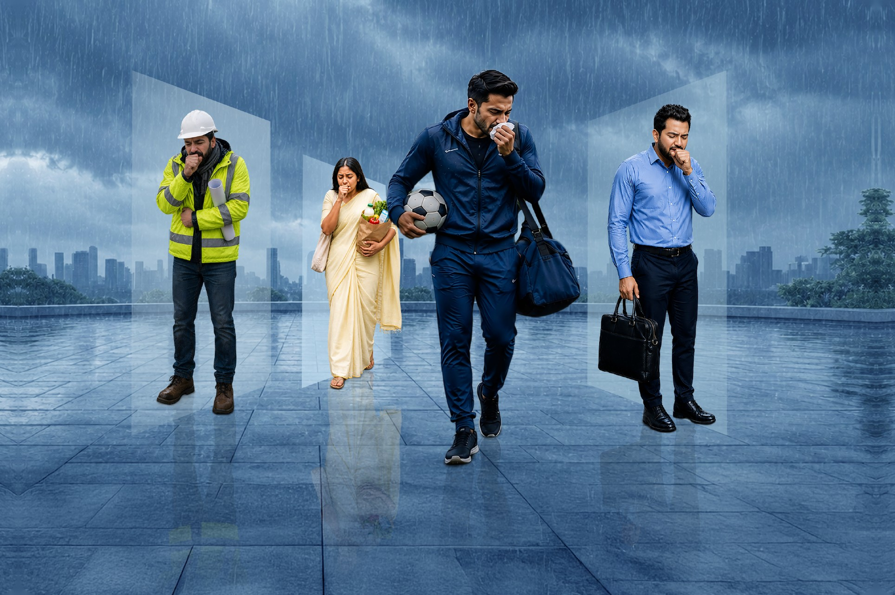

In RTIs during monsoon,
1
One prescription can make all the difference.
When symptoms interrupt the
road to recovery
Fictional image, for illustrative purposes only.
RTIs: Respiratory tract infections.
RTIs: Respiratory tract infections.